WINDSHIELD GLASS > REMOVAL |
| 1. DISCONNECT CABLE FROM NEGATIVE BATTERY TERMINAL |
| 2. REMOVE UPPER RADIATOR SUPPORT SEAL |
Remove the 7 clips and radiator support seal.

| 3. REMOVE FRONT FENDER MAIN SEAL LH |
 |
Using a clip remover, detach the 3 clips and remove the fender main seal.
| 4. REMOVE FRONT FENDER MAIN SEAL RH |
| 5. REMOVE FRONT WIPER ARM LH |
Remove the nut, wiper arm and blade.
| 6. REMOVE FRONT WIPER ARM RH |
Remove the nut, wiper arm and blade.
| 7. REMOVE COWL TOP VENTILATOR LOUVER SUB-ASSEMBLY |
 |
Remove the washer hose.
 |
Remove the 2 clips.
Detach the 17 claws and remove the cowl top ventilator louver sub-assembly.
| 8. REMOVE WINDSHIELD OUTSIDE MOULDING LH |
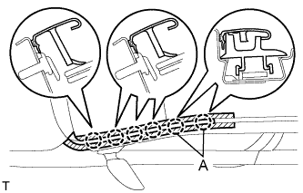 |
Remove the windshield outside moulding.
Put protective tape around the moulding.
Using a moulding remover, detach the 6 clips and remove the moulding.
| 9. REMOVE WINDSHIELD OUTSIDE MOULDING RH |
| 10. REMOVE NO. 4 WINDSHIELD MOULDING PAD |
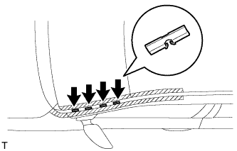 |
Remove the 4 No. 4 windshield moulding pads.
| 11. REMOVE NO. 3 WINDSHIELD OUTSIDE MOULDING CLIP |
Put a 4 mm (0.157 in.) drill bit into a drill.
Wind tape around the drill bit approximately 5 mm (0.197 in.) from the tip of the drill.
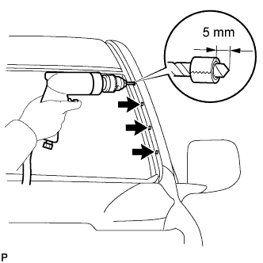 |
Lightly press the drill against the No. 3 windshield outside moulding clip(s), drill off the flanges of the No. 3 windshield outside moulding clip(s), and remove the No. 3 windshield outside moulding clip(s).
Using a vacuum cleaner, remove the No. 3 windshield outside moulding clip fragments and shavings from the drilled areas.
| 12. REMOVE ROOF DRIP SIDE FINISH MOULDING CLIP |
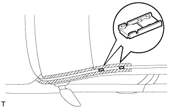 |
Remove the roof drip side finish moulding clips.
| 13. REMOVE FRONT ASSIST GRIP SUB-ASSEMBLY |
 |
Detach the 4 claws and remove the 2 assist grip plugs.
 |
Remove the 2 bolts.
Detach the 2 claws and remove the front assist grip.
| 14. REMOVE FRONT PILLAR GARNISH LH |
 |
Detach the clip 3 guides, and remove the front pillar garnish.
for 9 Speakers:
Disconnect the speaker connector and then remove the front pillar garnish.
 |
Protect the curtain shield airbag.
Thoroughly cover the airbag with a cloth or nylon sheet and fix the ends of the cover with adhesive tape, as shown in the illustration.
| 15. REMOVE FRONT PILLAR GARNISH RH |
| 16. REMOVE MAP LIGHT ASSEMBLY |
Using a screwdriver, detach the 2 claws and open the 2 covers.
Remove the 2 screws.
Detach the 2 clips and 2 guides.
Disconnect the connector and then remove the map light.

| 17. REMOVE VISOR BRACKET COVER |
 |
Detach the 4 claws and remove the visor bracket cover.
| 18. REMOVE VISOR ASSEMBLY LH |
 |
Remove the 2 screws and visor.
| 19. REMOVE VISOR ASSEMBLY RH |
| 20. REMOVE VISOR HOLDER |
 |
Turn the visor holder approximately 45° and pull it out as shown in the illustration.
Detach the 2 claws and remove the visor holder.
| 21. REMOVE CENTER VISOR ASSEMBLY LH (w/ Sub Visor) |
 |
Using a screwdriver, pry off the cover to detach the 2 clips and remove the center visor.
| 22. REMOVE CENTER VISOR ASSEMBLY RH (w/ Sub Visor) |
| 23. REMOVE INNER REAR VIEW MIRROR STAY HOLDER COVER (w/ EC Mirror) |
 |
Detach the 2 claws and remove the cover as shown in the illustration.
| 24. REMOVE INNER REAR VIEW MIRROR ASSEMBLY (w/ EC Mirror) |
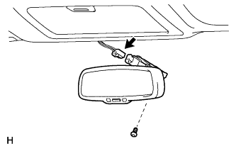 |
Disconnect the connector.
Using a T20 "TORX" socket wrench, remove the screw and inner rear view mirror.
| 25. REMOVE INNER REAR VIEW MIRROR ASSEMBLY (w/o EC Mirror) |
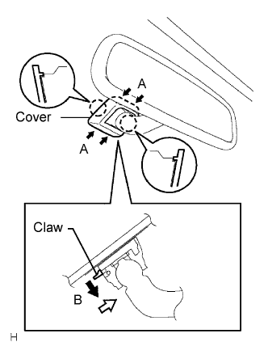 |
Push the cover in the direction indicated by the arrows labeled A and remove it.
While holding down the claw in the direction of the black arrow labeled B, slide the mirror in the direction of the white arrow and remove it.
| 26. REMOVE RAIN SENSOR COVER (w/ Rain Sensor) |
Slide the No. 2 cover in the direction of the arrow labeled (1).

Pull the stopper in the direction of the arrow labeled (2) to remove the No. 2 cover.
| 27. REMOVE RAIN SENSOR (w/ Rain Sensor) |
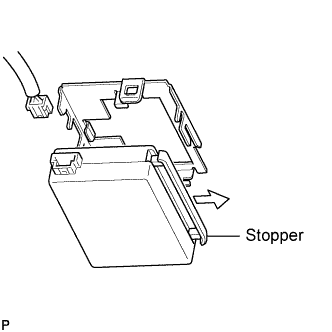 |
Release the stopper by pulling it down, and separate the rain sensor.
Disconnect the connector and remove the rain sensor.
When replacing the rain sensor tape.
Remove the rain sensor tape.
| 28. REMOVE ROOF HEADLINING |
w/ Sliding Roof:
Partially remove the roof headlining.
w/o Sliding Roof:
Partially remove the roof headlining.
| 29. REMOVE WINDSHIELD OUTSIDE MOULDING |
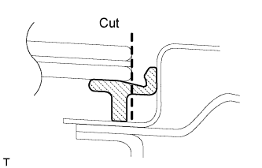 |
Using a knife, cut off the moulding as shown in the illustration.
Pull the shaded area shown in the illustration by hand to remove the windshield outside moulding.
| 30. REMOVE WINDSHIELD GLASS |
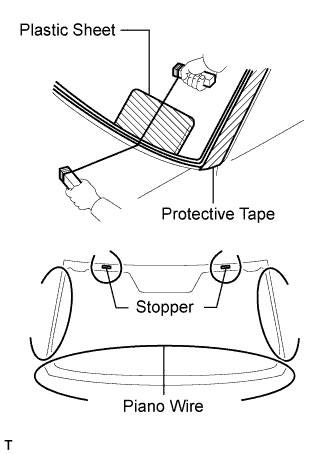 |
Apply protective tape to the outer surface of the vehicle body to prevent scratches.
From the interior, insert a piano wire between the vehicle body and glass as shown in the illustration.
Tie objects that can serve as handles (for example, wooden blocks) to both wire ends.
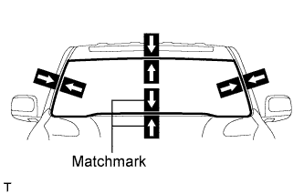 |
Place matchmarks over the glass and vehicle body on the locations indicated in the illustration.
w/ Windshield Deicer System:
Disconnect the windshield deicer connector.
Cut through the adhesive by pulling the piano wire around the glass.
Disconnect the stoppers.
Using suction cups, remove the glass.
| 31. REMOVE NO. 2 WINDSHIELD GLASS STOPPER |
Using a scraper, remove the 2 stoppers.
| 32. REMOVE WINDSHIELD GLASS ADHESIVE DAM |
Using a scraper, remove the dam.
| 33. REMOVE FRONT INNER WINDOW MOULDING COVER LH |
Using a scraper, remove the cover.
| 34. CLEAN WINDSHIELD GLASS |
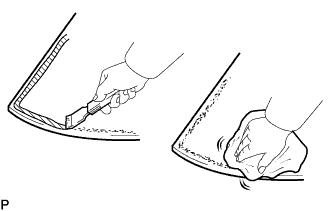 |
Using a scraper, remove the damaged stoppers, dam and adhesive sticking to the glass.
Clean the outer circumference of the glass with non-residue solvent.
| 35. REMOVE WINDSHIELD GLASS STOPPER |
Remove the 2 windshield glass stoppers.
| 36. CLEAN VEHICLE BODY |
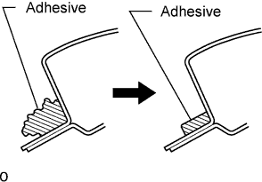 |
Clean and shape the contact surface of the vehicle body.
On the contact surface of the vehicle body, use a knife to cut away excess adhesive as shown in the illustration.
Clean the contact surface of the vehicle body with cleaner.